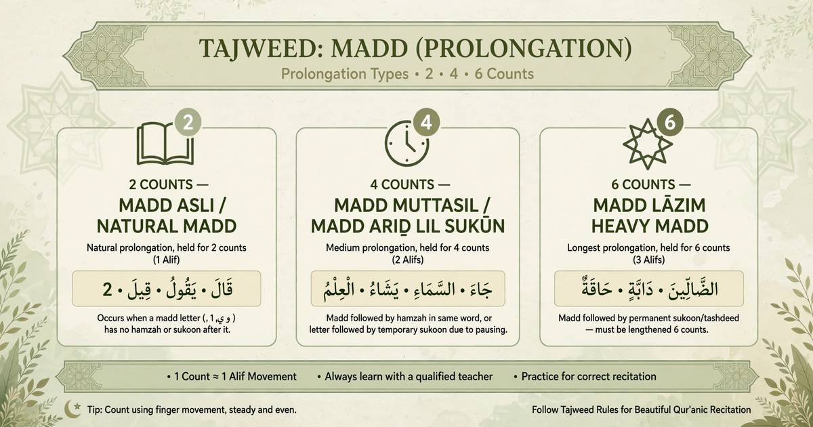

What Is Madd in Tajweed? Types of Prolongation Explained

Madd in Tajweed means extending a vowel sound for a prescribed duration during Quran recitation. The word Madd means elongation, and its rules help readers give each sound its proper length.
The three Madd letters are Alif (ا), Waw (و), and Yaa (ي), when they meet their required conditions. Depending on the type of Madd and the recitation context, a sound may be extended for two, four, five, or six counts in commonly taught Hafs recitation methods.
If you are learning Quran recitation in the USA or UK, understanding Madd can help you read more accurately. A teacher can demonstrate the timing and help you practise the differences between the types.
Practise with a qualified Quran teacher who can listen to your recitation and help you improve your timing.
Book Your Free Trial →What Are the Main Types of Madd?
Madd is commonly divided into Madd Asli (natural Madd) and Madd Far'i (secondary Madd). Madd Far'i occurs because of an additional cause, such as a Hamza or a Sukoon. The duration depends on the specific rule and the recitation method being followed.
1. Madd Asli or Madd Tabi'i — Natural Madd
Madd Asli is the natural prolongation that does not depend on a following Hamza or Sukoon. Its usual duration is two counts.
Example: قَالَ — the Alif after Qaf is a Madd letter, so the vowel is extended naturally.
2. Madd Badal — Usually Two Counts
Madd Badal occurs when a Hamza precedes a Madd letter in the relevant word structure. In the commonly taught Hafs narration through the Shatibiyyah route, it is generally read for two counts.
Example: آمَنَ — the opening Madd is an example of Madd Badal.
3. Madd Iwad — Two Counts When Stopping
Madd Iwad applies when stopping on a word ending with Tanween Fath. The final Tanween is replaced by an Alif-like prolongation of two counts, with the usual exception for words ending in Ta Marbuta.
Example: عَلِيمًا — when stopping, it is read as عَلِيمَا.
4. Madd Muttasil — Connected Madd
Madd Muttasil occurs when a Hamza follows a Madd letter within the same word. In commonly taught Hafs recitation, it is usually extended for four or five counts, depending on the recognised method of transmission being followed.
The key point is that the Madd letter and the following Hamza occur in the same word.
5. Madd Munfasil — Separated Madd
Madd Munfasil occurs when a word ends with a Madd letter and the next word begins with a Hamza. Its duration can vary according to the recitation route and teaching method. In commonly taught Hafs methods, four or five counts may be used.
Learn the duration from your teacher and keep your practice consistent with the recitation method you are studying.
6. Madd Lazim — Six Counts
Madd Lazim occurs when a Madd letter is followed by a permanent Sukoon, including the relevant cases involving Shaddah. Its duration is six counts in the standard teaching of this rule.
This rule requires careful practice because the permanent Sukoon is part of the reason for the longer duration.
7. Madd Arid Lissukoon — When Stopping
Madd Arid Lissukoon occurs when stopping on a word causes a temporary Sukoon after a Madd letter. It may be read for two, four, or six counts in the commonly taught Hafs method.
Your teacher can help you recognise when this rule applies and how to maintain a consistent rhythm while stopping.
How Many Counts Should You Hold Madd?
A count, or Harakah, is a basic unit used to measure the duration of a sound. It should not be treated as an exact number of seconds because the speed of recitation affects its length.
- Two counts: Commonly used for Madd Asli and Madd Badal.
- Four or five counts: Commonly taught for Madd Muttasil and Madd Munfasil in relevant Hafs methods.
- Six counts: Used for Madd Lazim.
- Two, four, or six counts: May be used for Madd Arid Lissukoon when stopping, according to the method being followed.
These are learning guidelines for common Hafs instruction, not a substitute for studying the rules of a particular narration and route with a qualified teacher.
Common Madd Mistakes Beginners Should Avoid
- Extending every long vowel by the same amount without identifying the rule.
- Reading Madd too quickly or cutting it short.
- Extending a sound longer than required.
- Confusing Madd Muttasil, where the Hamza is in the same word, with Madd Munfasil, where it begins the following word.
- Changing the duration from one repetition to another without following the method being taught.
To improve, practise short Quranic examples, listen carefully to a reliable recitation, and ask your teacher to correct your timing.
How to Practise Madd at Home
- Choose one Madd rule to study during each practice session.
- Listen to examples recited by a qualified reciter.
- Repeat the examples aloud while paying attention to the duration.
- Record yourself if possible and compare your recitation with the example.
- Ask a teacher to check your pronunciation and timing regularly.
Learn Madd Online with a Quran Teacher
Madd is easier to understand when you hear the difference between the types and practise them aloud. Individual online lessons allow a teacher to demonstrate the correct duration, listen to your recitation, and give feedback suited to your level.
Al Shimaa Quran Academy offers online Quran learning for children and adults, with flexible scheduling for students and families in the USA and UK.
Frequently Asked Questions
What does Madd mean in Tajweed?
Madd means extending a vowel sound for a prescribed duration according to the relevant Quran recitation rule.
How many counts is Madd Asli?
Madd Asli, also called Madd Tabi'i, is normally extended for two counts in the standard teaching of Hafs recitation.
Is every type of Madd six counts?
No. The duration depends on the rule. Some types are two counts, some may be four or five counts, and Madd Lazim is six counts in standard instruction.
What is the difference between Madd Muttasil and Madd Munfasil?
In Madd Muttasil, the Hamza follows the Madd letter in the same word. In Madd Munfasil, the Madd letter is at the end of one word and the Hamza begins the next word.
Can I learn Madd online?
Yes. Online lessons can help you hear examples, practise recitation, and receive feedback from a teacher.